Patch DeviceTree
First, read the decrypted secondary iOS devicetree using imagine to see if it is properly decrypted and not corrupted.
pmbonneau-mac#imagine -d DeviceTree.n90ap_dec.bin
The tool should print all nodes without returning any error messages.
Now, we need to add the no-effaceable-storage node to the default parent node.
Using a hex editor, open DeviceTree.n90ap_dec.bin then search for the string "firmware-min". This should brings you to the node firmware-min-capacity.
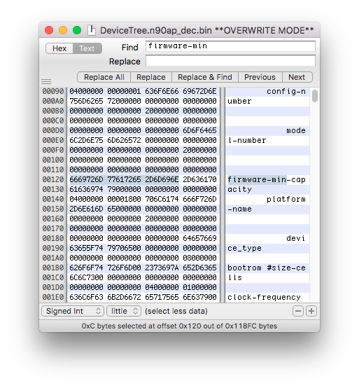
You know that you found the right node if there is "platform-name" near of it. Copy the node data to clipboard.
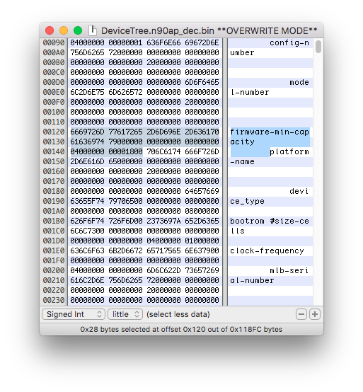
Search for the node use-lwvm.
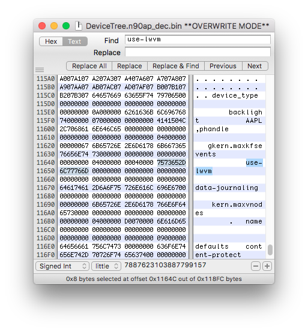
Now *insert* the copied firmware-min-capacity node data like this screenshot.
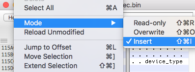
Be sure that the cursor is before the "u" of use-lwvm before paste data.
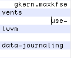
Paste from the clipboard, the node data copied previously.
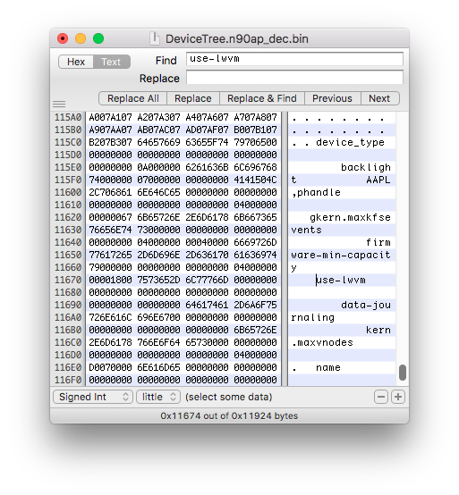
Rename the node name attribute firmware-min-capacity to no-effaceable-storage.
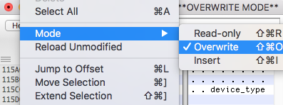
Now the most complicated part of that devicetree patch, increasing the child node count. Each node of the devicetree holds a count of its child nodes. We must update this count value on the parent node since we added one child node. If we don't update this value, devicetree parsers won't work properly as they expect a node with n child.
This value should be near of the first child node, as the count value is stored on the parent node which is right before it in the devicetree image.
For example, for the "default" node, the count value should be somewhat between the string backlight and AAPL,phandle. In this case, the child count value of the node default is 0x07.
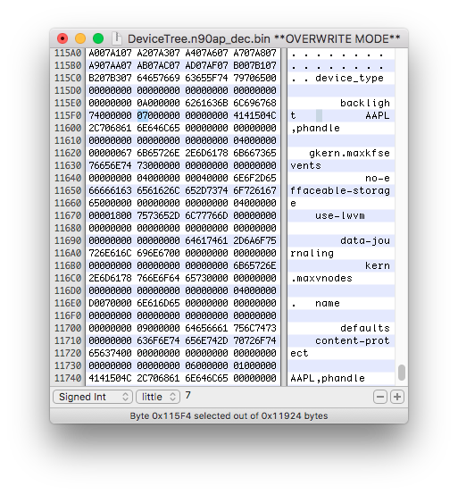
Patch it to 0x08 since we attached one additional node to this parent then save the modifications.
Check the patched devicetree using imagine.
pmbonneau-mac#imagine -d DeviceTree.n90ap_dec.bin
The tool should print all nodes without returning any error messages, and check if no-effaceable-storage is there. 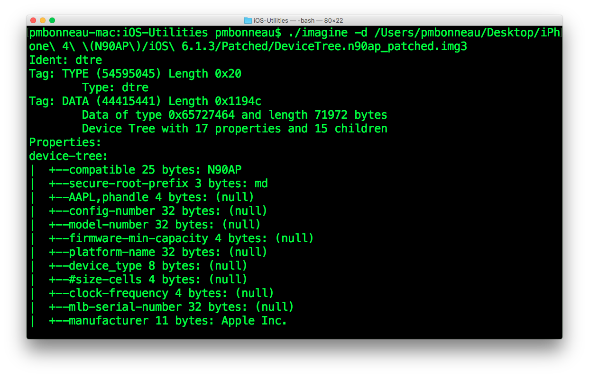 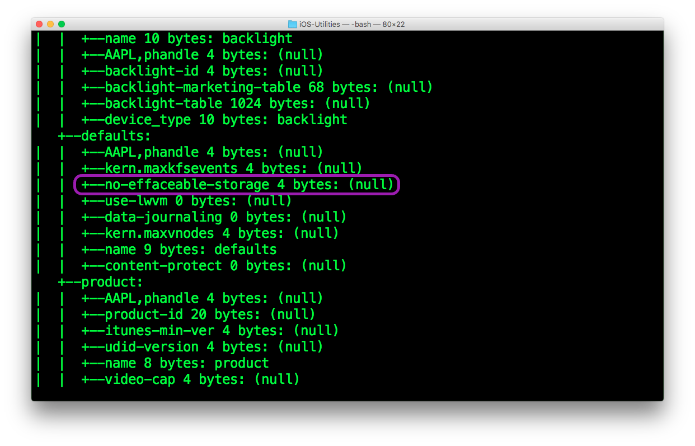 If everything is okay, repack the devicetree into an img3 container.
pmbonneau-mac#xpwntools DeviceTree.n90ap_dec.bin DeviceTree.n90ap_patched.img3 -t DeviceTree.n90ap.img3
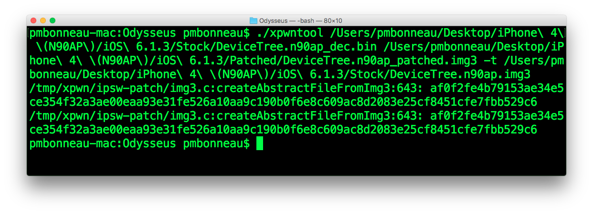 Rename the patched devicetree image DeviceTree.n90ap_patched.img3 to DeviceTreeB.[...].img3 and place it into the "Patched" folder created at the beginning.